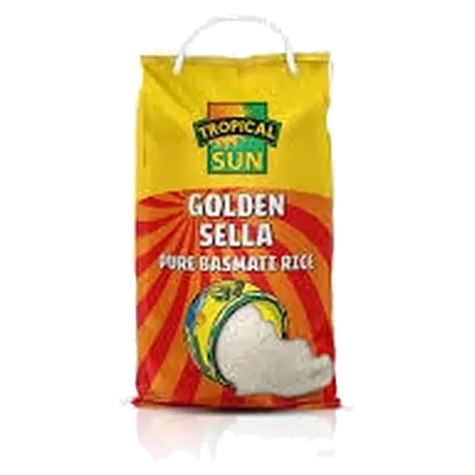
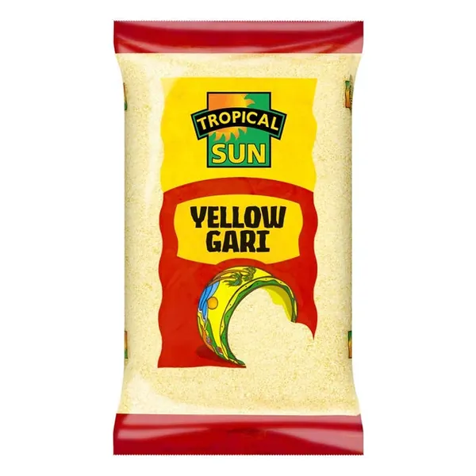
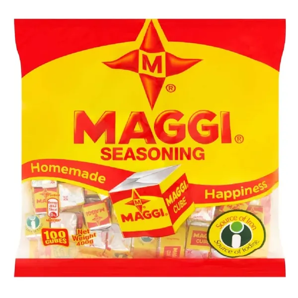

DanyJFood Market
Your African grocery shop, in your pocket.
1Browse
190+ groceries
From African stores across Scotland.
2Add
Add in one tap
Rice, egusi, palm oil, fresh meat and more.
3Checkout
Pick your delivery slot
Morning, afternoon or evening.
4Track
Track it to your door
See when it's packed and on its way.
DanyJFood Market
Shop from your phone.
Order now →Free delivery over £60
9:41


+1